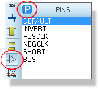
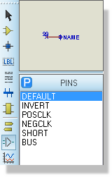
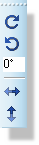
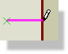
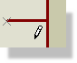

A full description of how to create and edit your own devices is given in Library Facilities. Here, we just discuss the placement and editing of pin objects. These are used to represent each drawn pin of a device element and consist of some graphics (often just a single line) plus the capacity to carry and display a pin name and a pin number.
Note that you cannot wire off a pin object - you can only connect to pins that belong to fully constituted components that have been placed in the usual way
An unlimited number of pin object types may be defined, and a good selection are provided in SYSTEM.LIB. However, when you first select the Device Pin icon, a basic set of 6 types are automatically pre-loaded into the Object Selector and these will suffice for most purposes.
To place a pin:





Having placed a pin, you will generally want to modify it to give it a pin name, number and electrical type. There are a variety of possibilities:
If a pin represents a data or address bus, you may want to use a bus pin In this case, pin numbers can only be specified using the Visual Packaging Tool. Equally, if the device has multiple elements, (e.g. a 7400) you must again specify pin numbers for each element using the packaging tool. In either of these cases, you should leave the pin numbers of the pins blank.
Please see the section on the Visual Packaging Tool for more information about packaging considerations.
A pin may be edited using any of the general editing techniques (see Editing an Object). In addition, since pins often appear in groups, the Property Assignment Tool can be put to good use for defining pin names, numbers and electrical types.
Pin objects have the following system properties:
| Property Name | Description |
|
NAME |
The pin name. |
|
NUM |
The pin number. |
|
SYMBOL |
The symbol used for the pin. This can be one of the standard pin symbols, or else the name of a user defined pin symbol. |
|
TYPE |
The electrical type of the terminal. This can be any of PASSIVE, INPUT, OUTPUT, BIDIR, TRISTATE, PULLUP, PULLDOWN, NC or POWER. |